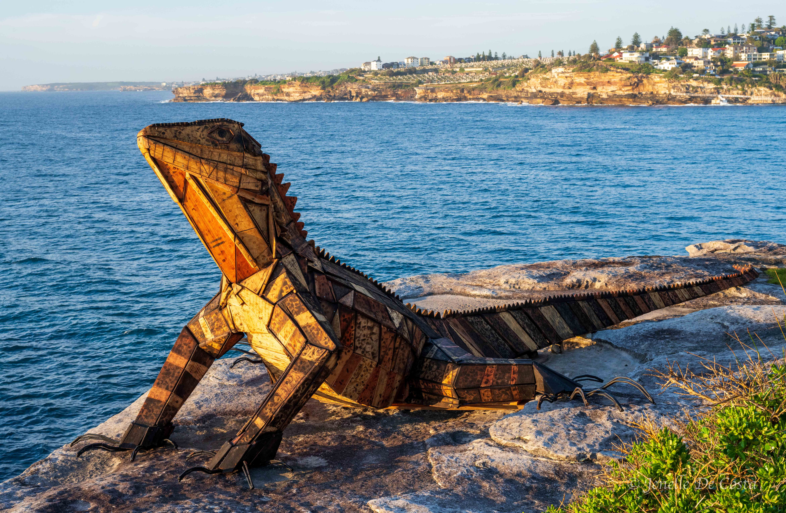

The 4500km trip to home. East across the Nullabor and on through South Australia, then northwest corner of Victoria, across southern and central New South Wales to Sydney and then north up the coast to Brisbane before heading west to Toowoomba...
Kalgoorlie
Today we turn north toward Kalgoorlie, 400km inland from Esperance. Norseman is the only town along the route and it is exactly
halfway....
8 October 2025
Nullabor Crossing
Today and for the next few days we are headed east across the "Nullabor". From Norseman to Ceduna. A 1201km drive with
nothing but roadhouses punctuating the wildneress...
10 October 2025
South Australia - Extended
Now it is time to head for home. Less sightseeing and more distance travelled. But first there are a few spots in South Australia we want to check out along the way. We take a detour to the Adelaide seaside suburb of Glenelg to see some glass sculptures...
15 October 2025

Bondi - Scuptures by the Sea
An early start and an uber ride to get across town to Bondi before sunrise. We are here to see the annual three week
exhibition called "Scupture by the Sea". What an absolutely wonderful spot to stage the exhibition....